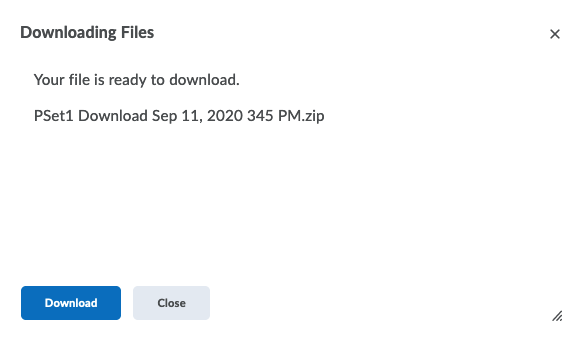
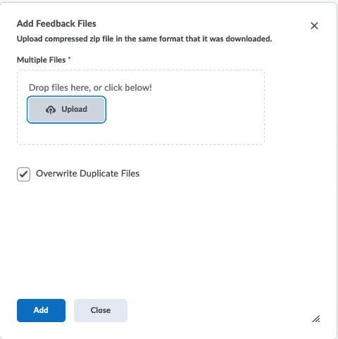

These instructions are specific to D2L; other learning management systems may be different, although the basic idea is likely to be the same.
The initial steps are best done on your computer, and not on the iPad directly.
Go to your assignment folder on D2L and first make sure that everyone has submitted PDF files and not Word files. If you have only a few Word submissions, it’s probably easiest to convert them yourself, but if you have quite a few, then you should select those students and send them an email requesting a PDF file not a Word file. I recommend you do this check very soon after the PSet is due, so that students have a bit of time to respond to your email.
Once you’re ready to download, follow the three steps shown below:

Save the .zip file on your computer. Since homeworks count as “Student Records” for FERPA purposes, you should save these on your MSU One Drive folder, not in Dropbox or iCloud. If you haven’t installed OneDrive on your computer, you should do so beforehand.
Once you’ve unzipped the files you will see a folder (this is a Mac view, but the PC should be similar)

This section assumes Notability and an iPad. If you are using another input method (graphics tablets), or another app for annotation, then you can skip this part.

Now grade each assignment as you normally would on paper.
When you are done grading them all, export them back to the same folder you downloaded them from.


On D2L go back the the Assignments folder for that assignment.
Choose Add Feedback files
Now add the new .zip file of the graded assignments. You should see the following dialog box:
